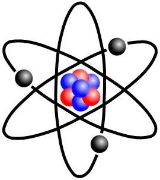
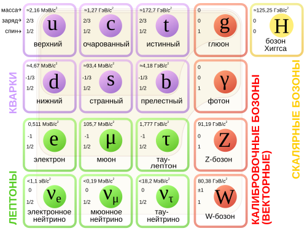
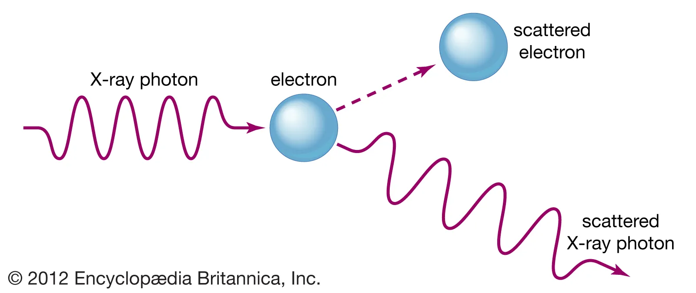
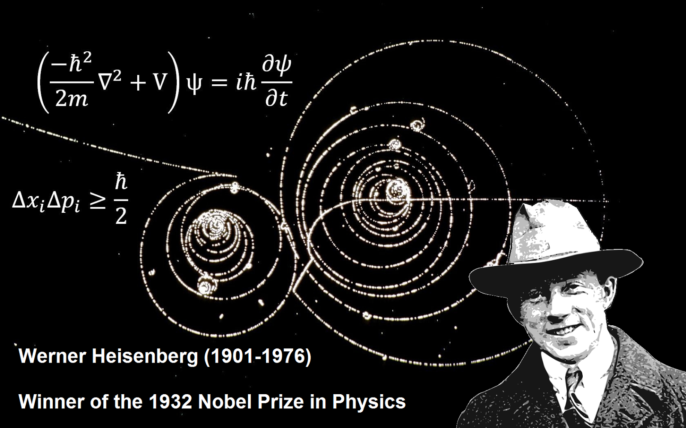
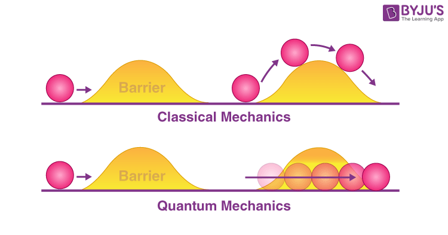
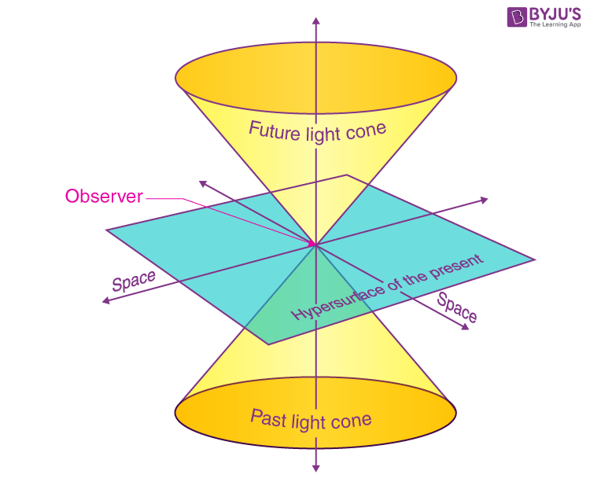
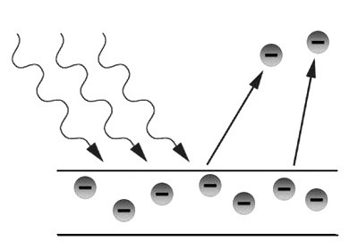
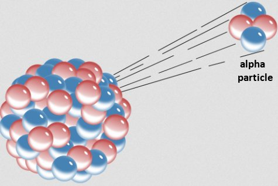
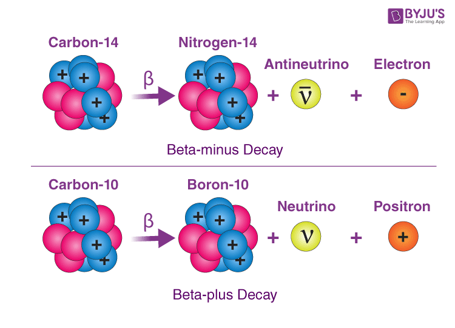
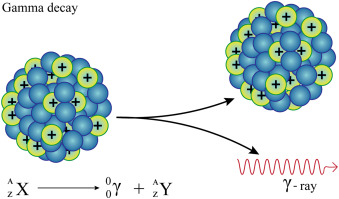

Dunya tiykarlari (tolıq maǵlıwmat ushın basıń)

Atom hám Orbitalar
Kvant dárejesindegi atom dúzilisi.

Kvarklar dúnyası
Materiyanıń eń kishi gerbishleri.

Foton hám Tolqın
Jaqtılıqtıń dual tábiyatı haqqında.

Kvant Kompyuter
Keleshek esaplaw texnologiyası.

Geyzenberg principi
Ólshewdiń múmkin emes shekleri.

Teleportatsiya hám Shım-shıtırıq
Aralıqtan baylanıslılıq sırları.

Nisbiylik Nazariyasi
Waqıt penen keńisliktiń óz-ara baylanıslılıǵı.
Ulıwmalıq Nisbiyliq teoriyası
Albert Eynshteyn tárepinen dóretilgen bul teoriya tartılıs kúshin keńislik penen waqıttıń mayısıwı sıpatında túsindiredi.
Massiv deneler (misalı, quyash) óz átirapındaǵı keńislikti keriwli gezlemege qoyilgan awır shar sıyaqlı iyedi.
E=mc² formulası energiya hám massanıń óz-ara baylanıslılıǵın dálillep berdi.

Tiyisli Nisbiylik
Waqıttıń astenlesiwi hám E=mc² sır.
Maxsus Nisbiylik Nazariyasi (1905)
Bul teoriya eki tiykargı postulatqa súyenedi: fizika nizamları barlıq inercial esaplaw sistemalarında birdey hám jaqtılıq tezligi (c=299972458m/s) barlıq baqlawshılar ushın turaqlı.
Waqt keneriwi: Dene qanshelli tez qozǵalsa, ol ushın waqıt sonshelli áste ótedi. Bul "Egizekler paradoksı" arqalı belgili bolǵan.
E=mc²: Massa hám energiya negizinde bir nárseniń eki túrli kórinisi bolıp tabıladı. Kishi muǵdardaǵı massa úlken muǵdardaǵı energiyaǵa aylanıwı múmkin.

Fotoeffekt Waqiyasi
Jaqtılıqtıń bólekshe tábiyatı hám Nobel sıylıǵı.
Fotoeffekt va Jaruqliq Kvantlari
Fotoeffekt - bul jaqtılıq tásirinde zattan (ádette metalldan) elektronlardıń urıp shıǵarılıwı qubılısı.
Eynshteyn tusinturiwi:Albert Eynshteyn 1905-jilda jaqtılıq úzliksiz tolqın emes, al "foton" dep atalıwshı energiya porciyalarınan ibarat ekenligin kórsetip berdi..
Usı ashılıwı ushın Eynshteyn 1921-jılı fizika boyınsha Nobel sıylıǵın alıwǵa miyasar bolǵan. Búgingi kúnde quyash panelleri hám sensorlar áyne usı princip tiykarında isleydi.

Alfa Boleksheler
Geliy yadroları hám radioaktivlik ıdıraw sırı.
Alfa ıdıraw hám Yadro fizikası
Alfa tarqalıwı - bul turaqsız atom yadrosınıń ózinen alfa bólekshesin shigarıp, basqa elementke aylanıw procesi.
Alfa bo'lekshesi bul NE? Ol negizinde eki proton hám eki neytronnan ibarat bolgan geliy 4H2 yadrosı bolip tabıladı. Olar oń zaryadqa iye hám massası jaģınan biraz awır bóleksheler bolip tabıladı.
Alfa nurları hawada bir neshe santimetr júre aladı hám ápiwayı qaǵaz beti menen tosıw múmkin, biraq insan organizmi ishine tússe, júdá kúshli ionlastırıwshı tásirge ie.

Beta idıraw
Elektronlardıń yadro ishinen atılıp shıǵıwı.
Beta ıdıraw hám Neytrino sırı
Beta tarqalıw - bul yadro ishindegi neytronnıń protonga aylanıwı (beta-minus) yamasa protonnıń neytronģa aylanıwı (beta-plus) procesi.
Beta bo'lakshesi ne? Bul proceste yadro ishinen júdá úlken tezlikte qozgalatuģın elektron Beta- yamasa pozitron Beta+ atılıp shiģadı.
Beta-bóleksheler alfa-bólekshelerge qaraǵanda ádewir jeńil hám tez. Olardı toqtatıw ushın juqa alyuminiy plastinkası kerek boladı. Bul proceste "arwaq bólekshe" dep atalıwshı neytrino ham payda boladi.

Gamma Nurlaniw
Álemdegi eń kúshli energiya tolqınları.
Gamma nurlanıw: Sheksiz energiya
Gamma nurlanıw - bul atom yadrosınıń qozģalgan halatınan turaqlı halatqa ótiwi nátiyjesinde ajıralıp shiģatuģın joqarı energiyalı fotonlar aģımı.
Gamma nurlariw ne? Alfa hám Betadan parıqlı túrde, Gamma bólekshe emes, al jaqtılıq sıyaqlı elektromagnit tolqın bolıp tabıladı, biraq onıń energiyası million ese kúshlire
Ol júdá joqarı kirip barıw qábiletine ie. Onı toqtatıw ushın qalıń qorǵasın qatlamı yamasa bir neshe metrli beton diywal kerek boladı. Medicinada rak kletkaların joq etiwde (Gamma-pıshaq) keń qollanıladı.